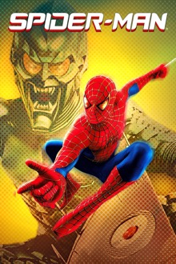
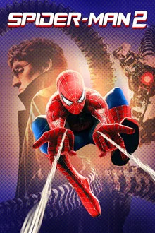
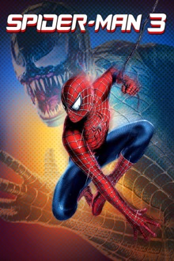

Spider-Man
The original cinematic run of Spider-Man ran from 2002 until 2007. It spanned 3 movies and starred
Toby Maguire as the titular Spider-Man. All three movies were directed by Sam Raimi.
Spider-Man

Quick Facts:
- Movie Name: Spider-Man
- Runtimes: 121 minutes
- Director: Sam Raimi
- Main Actor: Toby Maguire
- Villains: Green Goblin
Spider-Man 2

Quick Facts:
- Movie Name: Spider-Man 2
- Runtimes: 127 minutes
- Director: Sam Raimi
- Main Actor: Toby Maguire
- Villains: Doc Ock
Commentary:
Unfortunately the second and third Sam Raimi movies are not as strong as the first. That being said Doc Ock is one of my favorite villans so Spider-Man 2 still sits fairly highly in my books.
Spider-Man 3

Quick Facts:
- Movie Names: Spider-Man 3
- Runtimes: 139 minutes
- Director: Sam Raimi
- Main Actor: Toby Maguire
- Villains: Venom & Sandman
Commentary:
Even more unfortunately, Spider-Man 3 is my least favorite of the three films, which is a common sentiment across the fandom. I don't particularly care about Sandman or the Venom arc. That being said the movie still has its moments such as the Bully Maguire dance scene.
Commentary:
The original cinematic run of Spider-Man was very incredibly formative to my upbringing. I have incredibly memories of watching the this one with my dad when I was maybe 6. It sparked a lasting love of this character for me.